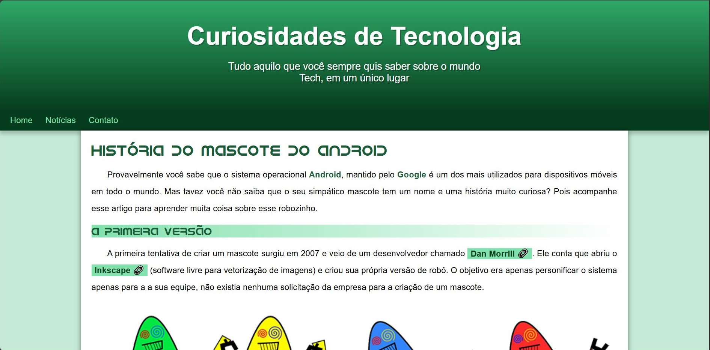

Me chamo Thiago Walek
Sou Desenvolvedor Web
Sobre
Sou estudante de 16 anos, atualmente cursando ensino médio técnico em informática na Univap, bastante interessado por programação web, com foco em desenvolvimento front-end e Python. Tenho alguns projetos no GitHub e estou procurando um estágio para aplicar meus conhecimentos, aprender mais, e além de tudo contribuir para o sucesso da empresa.
Hard Skills
HTML é uma linguagem de marcação, seu nome significa Hyper Text Markup Language, ou seja uma linguagem de marcação.
CSS utiliza de query selectors para estilizar elementos HTML.
JavaScript é uma linguagem de programação usada para carregar automações dentro dos sites.
C++ uma linguagem de programação de alto nível.
Python uma linguagem de programação utilizado aplamente na área de IAs, porem também bem flexível.
Soft Skills
Trabalho em Equipe.
Resiliência.
Projetos
Projeto lampada 1

Um projeto que consiste no acender/apagar de uma lampada bem enfeitada, e com efeito sonoro.
Projeto lampada 2
Esse projeto é um teste de inputs diferentes sobre uma lampada.
Projeto Cordel
Projeto Android
Projeto Redes Sociais

Um projeto de minhas redes sociais, para testar a adaptabilidade de um site, em uma dinâmica de um celular.